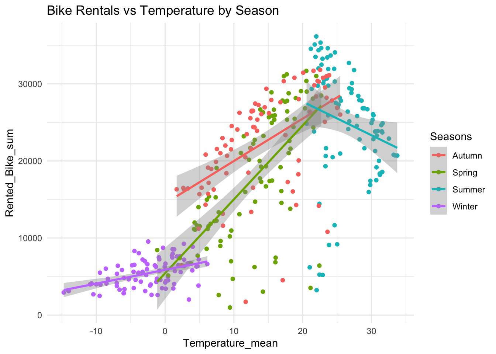
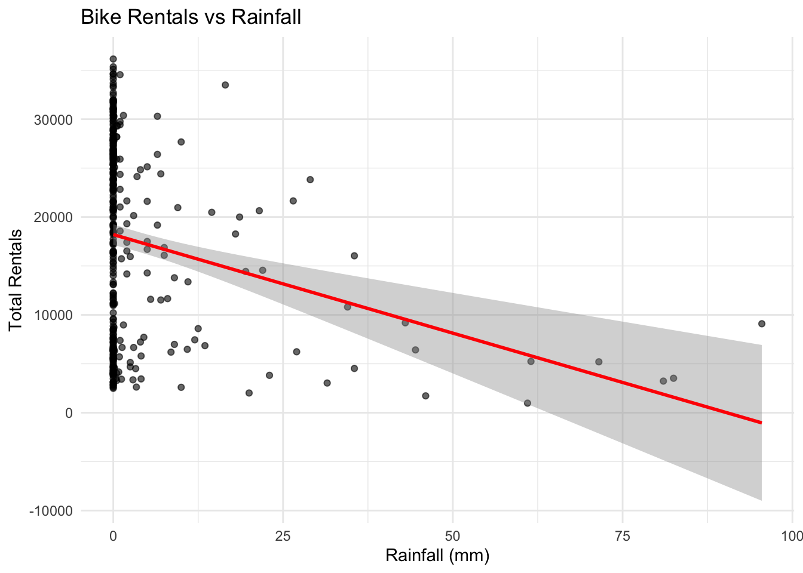
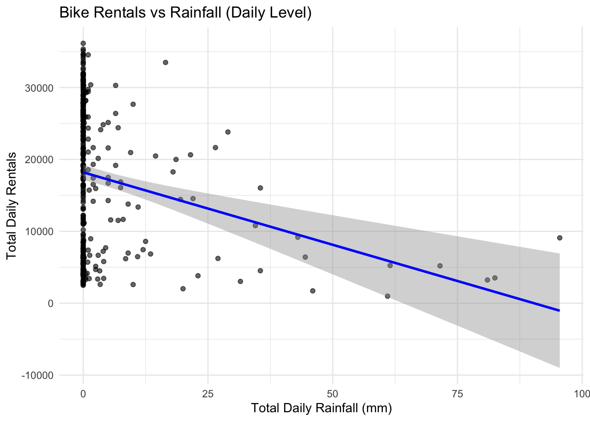

# A tibble: 6 × 12
Date Seasons Holiday Rented_Bike_sum Rainfall_sum Snowfall_sum
<date> <fct> <fct> <dbl> <dbl> <dbl>
1 2017-12-01 Winter No Holiday 9539 0 0
2 2017-12-02 Winter No Holiday 8523 0 0
3 2017-12-03 Winter No Holiday 7222 4 0
4 2017-12-04 Winter No Holiday 8729 0.1 0
5 2017-12-05 Winter No Holiday 8307 0 0
6 2017-12-06 Winter No Holiday 6669 1.3 8.6
# ℹ 6 more variables: Temperature_mean <dbl>, Humidity_mean <dbl>,
# Windspeed_mean <dbl>, Visibility_mean <dbl>,
# Dew_Point_Temperature_mean <dbl>, Solar_Radiation_mean <dbl>
Exploratory Graphs
ggplot(daily_bike, aes(x = Temperature_mean, y = Rented_Bike_sum, color = Seasons)) +geom_point() +geom_smooth(method ="lm") +labs(title ="Bike Rentals vs Temperature by Season") +theme_minimal()
`geom_smooth()` using formula = 'y ~ x'

ggplot(daily_bike, aes(x = Rainfall_sum, y = Rented_Bike_sum)) +geom_point(alpha =0.6) +geom_smooth(method ="lm", color ="red") +labs(title ="Bike Rentals vs Rainfall", x ="Rainfall (mm)", y ="Total Rentals") +theme_minimal()
`geom_smooth()` using formula = 'y ~ x'

As temperature increases, daily bike rentals also increase. This pattern is strong in spring, summer and autumn. Winter shows low rentals even on warmer days. This means temperature is a major driver of bike demand but its effect depends on the season. Warm and sunny seasons encourage more people to use bikes.
Rainfall has a strong negative effect on bike rentals. Even a small amount of rain causes rentals to drop, and heavier rain almost always leads to very low daily rental numbers. This shows that weather conditions, especially rainfall have an immediate impact on bike usage.
ggplot(daily_bike, aes(x = Rainfall_sum, y = Rented_Bike_sum)) +geom_point(alpha =0.6) +geom_smooth(method ="lm", color ="blue") +labs(title ="Bike Rentals vs Rainfall (Daily Level)",x ="Total Daily Rainfall (mm)",y ="Total Daily Rentals") +theme_minimal()
`geom_smooth()` using formula = 'y ~ x'

Temperature has the strongest positive correlation with bike rentals, means warmer days usually lead to more rides. Wind speed and humidity show weak negative relationships.
Visibility has a small positive correlation.
Overall, these correlations confirm that weather conditions, especially temperature play a major role in predicting rental behavior.